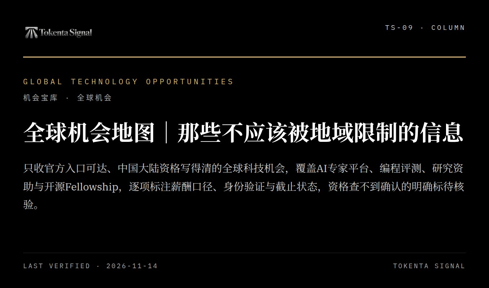
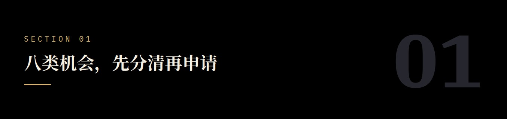
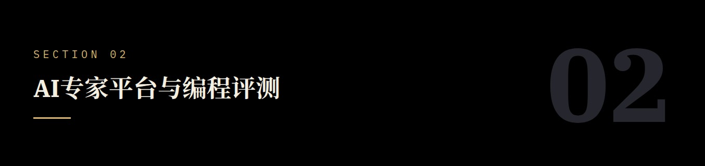
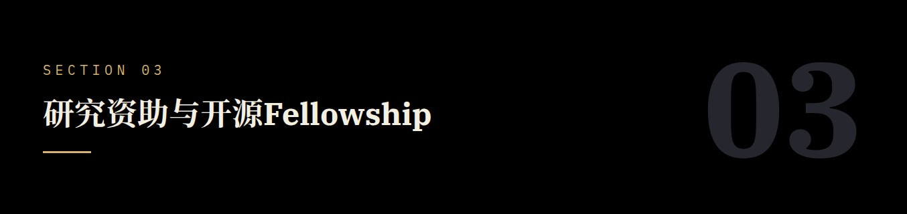
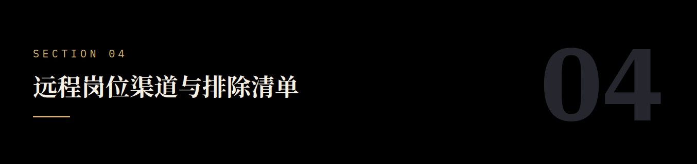

全球机会这一栏只收一类东西，居住在中国大陆，靠官方通道就能申请，不需要先有海外身份的科技机会。远程岗位、AI专家平台、付费研究、研究资助、编程评测、国际研究项目、访问研究与开源Fellowship都在范围内，但每一类都有自己的资格暗门。
栏目的筛选标准只有三条。入口必须来自官方页面，资格必须写清居住地口径，涉及钱必须写清是工资、时薪、任务费还是资助金。写着Remote却只对欧美时区或欧美实体开放的，不算全球机会。资格在官方页面查不到确认的，卡片里直接标待核验，不替读者猜。

八类机会的差别在合作关系。Remote Technology Jobs是正式雇佣或长期合约，看雇主实体与发薪方式。AI Expert Platforms与AI Coding Evaluation Work是按任务或时薪结算的专家网络，看派单稳定性与身份验证。Paid Research Opportunities多为短期研究任务，看议题匹配。Research Fellowships与Open Source Fellowships是资助性质，看评审周期与成果要求。International Research Programs与Visiting Research Opportunities涉及机构 affiliation，看邀请与签证安排。
国际化申请的基本条件大同小异。英文版简历与可公开访问的作品集或GitHub，一套能收美元的收款通道，PayPal、Payoneer与Deel是最常见的三种。政府签发证件要能过Persona或同类身份验证。非美国居民接美国机构的钱，通常要填W-8BEN。时区重叠要求常写在细则里，北美时区岗位先确认自己能不能长期配合，再投。
还有一条容易被忽视的门槛是材料的可复用性。同一个英文简历版本，同一套作品集链接，同一种自我介绍口径，在不同平台反复使用，边际成本会越投越低。每个平台都临时改一版材料，时间全耗在格式上。先把基础材料打磨成一个稳定版本，再针对每个机会的评审口径做小幅调整，这是国际化申请能长期坚持的前提。

这一类是目前中国大陆开发者最容易真正拿到钱的入口。平台替实验室组织专家供给，个人出技能与时间，结算是时薪或任务费，不构成雇佣关系。差别全在细节里，同一平台不同国家的时薪可以差一倍，身份验证卡在哪一步，决定了要不要投入时间。
先看已经走通的，再看必须谨慎的。Askable与SME Careers都有中国大陆参与的实际记录，Alignerr注册环节对中国开放，最后一道身份验证还没有官方说法。DataAnnotation单价最高，资格口径却最模糊，它的入门测评一生只有一次机会，顺序不能反。
Askable Agentic Coding Tasks（Askable专家任务）
机会类型 AI Expert Platform，AI Coding Evaluation Work
是否付费或有薪酬 有，按任务付费
薪酬公开口径 单个任务300至500美元，按任务难度分档，以参考模型多次运行的通过次数定档。PayPal月结，每月第一个工作日支付上月已通过任务款，数字口径来自平台内任务开放通知（2026-11-13）与平台协议，帮助中心页面未载这些数字
申请条件 先签Participant Service Agreement，再按集合协议接单，在指定仓库内构建或完成评测任务并通过校验脚本
学历或经验要求 无公开学历门槛，看工程能力与出题质量，示例集合要求能独立构建可验证的编程任务
居住地限制 官方未公布地区排除清单
中国大陆居民是否符合资格 符合。已有中国大陆居民完成签约并实际进入任务构建的核验记录（2026-11-14）。地点与手机号口径平台仍在与其团队确认，属待核验细节
是否要求工作许可 不提供工作许可，按独立承包商参与，需自行具备在居住地合法工作的资格
是否需要身份验证 需要，签约与收款环节核验身份，付款时填W-8BEN
截止日期 无统一截止，集合名额有限，示例集合50个名额
当前开放状态 开放中，2026-11-13已开放新任务集合
本栏目已实测从注册签约到进入任务构建的完整流程。注册时手机号国家码环节曾出现限制，遇到同类问题先联系平台团队，不要编造号码。
Alignerr（Labelbox）AI专家网络
机会类型 AI Expert Platform，AI Coding Evaluation Work
是否付费或有薪酬 有，时薪制合约
薪酬公开口径 岗位页逐岗标注。示例岗位Computer Engineering Expert为35至60美元每小时，编程类岗位另有25至100美元每小时的美国口径区间，中国区实际时薪以岗位页与合同为准
申请条件 在线申请后完成AI面试，通过后进入项目匹配，工时多为每周10至40小时
学历或经验要求 按岗位区分，工程类要求相关专业背景或多年工程经验
居住地限制 官方未公布完整国家清单，逐岗确认
中国大陆居民是否符合资格 注册环节国家列表可选China，且已实测可完成注册进入后台（2026-11-14）。后续Persona身份验证是否接受中国护照，官方未公布，标待核验
是否要求工作许可 不提供，按承包商合作，需自行具备在居住地合法工作的资格
是否需要身份验证 需要，Persona验证在申请具体岗位阶段触发，并有摄像头面试环节
截止日期 滚动招聘，无统一截止
当前开放状态 开放中，官方岗位页持续更新
AI面试明文禁用AI协助并开启摄像头，需要本人完成。先备好证件，再进入岗位申请流程。
SME Careers（SuperAnnotate）Chinese-Speaking Python Expert
机会类型 AI Expert Platform，AI Coding Evaluation Work
是否付费或有薪酬 有，时薪制合约，经Deel周结
薪酬公开口径 逐岗标注上限。中国区Chinese-Speaking Python Expert最高27美元每小时，官方职位板2026-11-14核验。其他地区同岗最高可达40至50美元，地区差价明显
申请条件 注册提交档案后申请具体岗位，完成约15分钟录制AI面试，可重录一次，面试禁用AI协助
学历或经验要求 Chinese-Speaking Python Expert要求3年以上经验，普通话流利，英语读写达标。高级Python Engineer岗要求7年以上经验，中国区最高60美元每小时
居住地限制 逐岗标注国家，职位板按国家拆分条目
中国大陆居民是否符合资格 符合，官方职位板有中国区条目
是否要求工作许可 不提供，承包商合约经Deel签署
是否需要身份验证 需要，签约环节在Deel完成身份核验
截止日期 滚动招聘，无统一截止
当前开放状态 开放中，岗位数量以官方职位板实时显示为准
同一岗位按国家拆成多条，时薪各不相同，申请时认准中国区条目，不要拿其他地区的上限当自己的预期。
DataAnnotation 编程评测（资格待核验）
机会类型 AI Coding Evaluation Work
是否付费或有薪酬 有，经PayPal支付
薪酬公开口径 官方FAQ口径，编程轨起价40至150美元以上每小时，通用轨25至50美元每小时
申请条件 注册时选定资格轨并完成Starter Assessment，时长约1至2小时
学历或经验要求 通用轨要求本科或同等实际经验，编程轨要求Python、JavaScript等编程经验
居住地限制 官方FAQ未公布支持国家清单，同系岗位曾只列少数国家
中国大陆居民是否符合资格 待核验。官方未证实中国大陆居民可参与，FAQ只讲流程，不讲地区
是否要求工作许可 不提供
是否需要身份验证 需要，Persona验证，要求政府签发带照片证件
截止日期 滚动申请，无统一截止
当前开放状态 开放申请，但中国大陆资格未确认前不建议开考
Starter Assessment一生只能考一次，官方FAQ明文无补考。资格没有确认之前贸然注册开考，可能浪费唯一一次机会，这张卡只作警示与观察。

Fellowship的钱是资助，不是工资。金额看着大，评审周期也长，适合手里已经有明确项目构想的人。Mozilla Fellowship本轮给10个名额，每人最高12.5万美元，周期12个月，先交意向书再进完整申请。它的官方页面没有公布地区排除清单，中国大陆居民的资助发放可行性要在申请前向基金会确认。
开源Fellowship的门槛更低，回报也更确定。Google Summer of Code按居住国发津贴，中国大陆在官方津贴表中单列金额。LFX Mentorship每年三期滚动，错过一期只等几个月。两个项目都要求申请人在居住国本身具备合法工作资格，资格逻辑是先确认能合法参与，再谈技能匹配。
Mozilla Fellowship（Mozilla Foundation）
机会类型 Research Fellowship
是否付费或有薪酬 有，资助金性质
薪酬公开口径 官方征集页口径，10名Fellows，每人最高125,000美元，周期12个月，另可进入200多人的Fellows网络
申请条件 先提交Letter of Intent，受邀后进入完整申请，面向做早期、高风险技术构想的建设者与研究者
学历或经验要求 无公开学历门槛，看项目构想与既往工作
居住地限制 官方征集页未公布地区排除清单
中国大陆居民是否符合资格 待核验。官方页面未点名中国大陆，资助发放涉及跨境合规，申请前应向基金会确认中国大陆居民的资助发放可行性
是否要求工作许可 不提供工作许可，资助不构成雇佣关系
是否需要身份验证 需要，申请与发放阶段按基金会流程核验身份与收款资格
截止日期 2026-12-17 23:59，太平洋时间（UTC-8），为Letter of Intent截止
当前开放状态 开放中，本轮为2027至2028周期
截止时间按太平洋时间计算，北京时间提交要预留一天以上余量，不要卡点。
Google Summer of Code（GSoC）
机会类型 Open Source Fellowship
是否付费或有薪酬 有，津贴性质，非工资
薪酬公开口径 官方津贴表按居住国与项目规模分档。中国大陆为小项目900美元，中项目1,800美元，大项目3,600美元。经Payoneer分两次发放，中期评估后45%，结项后55%
申请条件 年满18岁，学生或开源新手，在居住国具备合法工作资格，向入选的开源组织提交项目提案
学历或经验要求 不要求在读身份，要求开源新手身份，此前录取次数有上限，详见官方规则
居住地限制 居住国不得为美国禁运国家
中国大陆居民是否符合资格 符合，中国大陆在官方津贴表中单列金额
是否要求工作许可 不提供，要求申请人本身在居住国具备合法工作资格
是否需要身份验证 需要，录取后按Payoneer流程核验
截止日期 2026年度贡献者申请已于2026-03-31截止，本轮已结束
当前开放状态 本轮已结束。2027年度赛程官方尚未公布，按往年节奏通常1月开放组织申请，3月开放贡献者申请，此为往年节奏推断，不是官方公告
现在能做的是提前选组织、读代码、交小补丁，等官方公布赛程后再提交提案。任何声称可以代报名的中介都不要信。
LFX Mentorship（Linux Foundation）
机会类型 Open Source Fellowship，导师制项目
是否付费或有薪酬 部分项目有津贴，逐项目确认
薪酬公开口径 Linux基金会官方口径，津贴按居住国购买力平价计算，2026-07-01起开始的项目区间为1,000至6,600美元，属教育资助性质，细则见官方按国家津贴表。无津贴的项目会在页面标明
申请条件 年满18岁，在居住国具备合法工作资格，能完整投入一期12或24周，每期最多同时申请3个项目
学历或经验要求 不要求学生身份与学历，按项目要求匹配技能，每人职业生涯只能完成一次LFX Mentorship
居住地限制 官方文档未列国家排除清单
中国大陆居民是否符合资格 符合。官方条件只要求在居住国具备合法工作资格，中国大陆未被排除，具体津贴金额以项目页的国家表为准
是否要求工作许可 不提供，要求申请人本身在居住国具备合法工作资格
是否需要身份验证 需要LF ID账号，收款环节按基金会流程核验
截止日期 每年三期滚动。下一期为2027年第一期，项目通常在开期前数周上架，申请窗口以官方门户为准
当前开放状态 当前期次进行中，下一期项目待上架，可提前建好LF ID并关注门户
一生只能完成一次，选择项目时优先挑与自己技术栈贴合、导师活跃的项目，不要为了津贴上限盲选。

远程岗位这一类，本栏目只给渠道与甄别方法，不搬运具体岗位。原因是岗位时效太短，且列表标签经常与正文细则冲突。We Work Remotely列表页标着Anywhere in the World的岗位，正文里仍可能写只限特定雇佣实体。判断顺序是先看正文的地区细则，再回雇主官网确认同一岗位还在招，最后才准备材料。
排除清单同样重要。Outlier的官方工作地点政策列明了可工作的国家与地区名单，中国大陆不在名单内，台湾在名单内。Turing的公开岗位以限定地区为主，中国大陆能否申请未见官方确认，按待核验处理。MLH Fellowship的官方FAQ写明亚太地区暂不开放申请，中国大陆在其范围内。三个平台名气都不小，对中国大陆读者却是关闭的，写出来是为了省掉无效注册的时间。
防骗底线适用于所有渠道。只走官网与官方ATS，不在私信里投简历，不交任何名目的入职费用、培训费与设备押金，不装来历不明的会议软件与远程控制工具。把雇主名称加上scam或complaint搜一遍，是成本最低的预检。
We Work Remotely（远程岗位渠道）
机会类型 Remote Technology Jobs渠道，非单一雇主
是否付费或有薪酬 薪酬由各雇主岗位决定，逐岗核验
薪酬公开口径 岗位页多标注年薪区间，无标注的岗位先向雇主确认，确认不了就放弃
申请条件 雇主付费发布，申请直达雇主官网或官方ATS，平台不代投
学历或经验要求 逐岗不同
居住地限制 逐岗差异极大。列表页有Anywhere in the World、Asia Only与单一国家等标签，标签与正文细则可能不一致，必须读正文
中国大陆居民是否符合资格 逐岗核验。只有正文明确接受中国大陆居住者，或明确worldwide且无雇佣实体限制的岗位才算符合，列表标签不能单独作准
是否要求工作许可 多数岗位要求申请人自备居住国工作资格，部分雇主只通过EOR或承包商方式合作
是否需要身份验证 平台层不验证，入职流程内由雇主完成
截止日期 逐岗不同，岗位发布后通常30天左右下架
当前开放状态 持续更新，核验时首页多个分类在24小时内有新帖
把这个站当线索源，不当结论源。每条岗位都要回雇主官网复核地区细则与在招状态，两步都过才值得花时间写材料。

01 先按卡片里的中国大陆资格结论分三档行动，符合的直接申请，待核验的先查官方FAQ或发邮件确认，排除的不要注册。
02 申请前把收款通道备好，PayPal、Payoneer、Deel三个账户的实名信息与证件保持一致，避免卡在最后一步。
03 每个机会都保存官方页面截图与申请回执，平台改口径时以回执时间为准。
04 一次性测评类平台最后动，先用可重复申请的平台积累记录与收入。
05 发现资格口径变化，在公众号后台留言，栏目按月复核卡片状态。

SOURCES · 来源与核验
[1] Askable Help Center，How Askable Works (Participants)，PayPal结算口径
[2] Alignerr官方岗位页，Computer Engineering Expert，时薪与工时口径
[4] DataAnnotation官方FAQ，薪酬、Starter Assessment与身份验证口径
[5] Mozilla Foundation官方征集页，Fellowships名额、金额与截止时间
[6] Google Summer of Code官方津贴页，中国大陆金额分档
[7] LFX Mentorship官方文档，Getting Started，资格条件
[8] Linux Foundation官方博客，LFX Mentorship津贴模型调整
[9] Outlier官方Flexible Working Guidelines，可工作国家名单
[10] We Work Remotely官方首页，岗位地区标签口径
[11] LFX Mentorship 官方津贴表（按国家），2026-07-01 起项目适用，总额区间 1,000 至 6,600 美元
LAST VERIFIED · 2026-11-14
TOKENTA SIGNAL
Extracting signals from the noise. 本栏目内容来自公开来源并标注核验日期，不构成任何投资建议。
signal.tokenta.space · team@tokenta.space